更新日：2026-10-28
オープンCAE学会（B-16、2026-11-12）の発表の「はじめに」と「目的」のスライドに載せる情報を、1 か所に整理した記事です。 最初の表（§1）で全体を見渡せるようにし、§2 以降でその根拠を順に説明します。 発表のページとの対応は、§2 が 1 ページ目「はじめに」、§3 が 2 ページ目「目的」、§4 が 3 ページ目「全体の流れ」、§5 が 4 ページ目「データ同化とは」、§6 が 5 ページ目「データ同化による課題」、§7 が 6 ページ目「低次元モデル化（ROM）」、§8 が 7 ページ目「ROM の適用範囲」、§9 が 8 ページ目「データ同化の流れ」、§10 が 9 ページ目「データ同化で試したこと」、§11 が 10 ページ目「未観測点の温度」、§12 が 11 ページ目「センサの置き場所：Fisher 情報行列」です。
この記事の対象：本研究は、工作機械を想定した中空円筒の数値実験です。真値はすべて計算（OpenFOAM＋FrontISTR、または ROM）で、実機では確かめていません。
| 中身 | |
|---|---|
| 問題（何に困っているか） | 工作機械の加工誤差の大きな部分は、熱による変形（熱変位）である。補正するには、熱変形を正しく予測する必要がある |
| 課題（なぜ難しいか） | ①
解析モデルの条件（発熱量、熱伝達率、初期温度）が分からず、解析だけでは合わない ② 温度の傾向が合っても、変形が合うとは限らない ③ 本当に知りたい工具先端の変位は、加工中に測れない ④ 詳しい解析を測定のたびに何十回も回すのは重い |
| 既存の取り組み | 温度を測って回帰で変位を予測する／FEM で計算する／ROM とカルマンフィルタで温度場を推定する／変位を直接測って補正する。どれも変位を「出力」か「補正の対象」として扱い、推定の入力（観測）には使っていない |
| 本研究のアプローチ | 少ない温度・変位の測定を、解析モデルとデータ同化で組み合わせ、温度場・発熱量・熱変形を逐次推定する。変位も観測に入れる。軽いモデル（ROM）で回し、センサの置き場所は推定したい量に合わせて測る前に計算で選ぶ |
| やったこと | 中空円筒の片側加熱を題材に、OpenFOAM → FrontISTR で正解を作り、POD・Q-DEIM の ROM と EnKF で、測っていない場所の熱変形を推定した。すべてオープンソース |
ここ（2-1 の問題と 2-2 の課題）までを、発表の 1 ページ目に載せます。
図 0 立形マシニングセンタの熱変形（107 の S1：4 時間運転 → 4
時間停止。温度は OpenFOAM、熱変形は FrontISTR で計算した結果。変形を
2000 倍）。黒い箱が発熱源（主軸モータ 250 W、主軸の軸受 150 W、Z
軸の送り 40 W、Y 軸の送り 40
W）。左：運転すると主軸頭とコラムが温まって変形し、工具の位置がずれる。右：工具とワークのずれ。運転中に上下（Z）で約
65 µm
ずれ、止めると時間をかけて戻る。実機ではなく、工作機械を想定した形での計算。計算ケース：sample/107_machining_center_rom/01_openfoam_thermal/cases/S1_run4h_stop4h（OpenFOAM）、sample/107_machining_center_rom/02_frontistr_thermal_deform/work/S1_run4h_stop4h（FrontISTR）。作図：presentation/make_intro_machine_gif.py。
Li ら (2024) は、熱誤差の対策を 2 つに分けています。
| 対策 | 中身 | 例 |
|---|---|---|
| 回避 | 温度変化や変形を起こしにくくする | 低膨張材、構造の工夫、冷却 |
| 補正 | 熱変形を予測して、位置指令を直す | 温度からの回帰、FEM、学習モデル |
Li らは、回避は補正より費用がかかることが多い、と述べています。補正では、熱変形を正しく予測できることが前提になります。
メーカー各社も補正の機能を出しています（オークマのサーモフレンドリーコンセプト、マザックの AI Thermal Shield、DMG MORI の Spindle Growth Sensor など。詳しくは blog_001 §0-3）。
熱解析には、発熱量、表面の熱伝達率、初期の温度分布などの条件が必要です。これらは運転のしかたや組み立てで変わり、事前に正しく決めるのは困難です。
熱変形は、温度の上がり方の空間分布と、構造の拘束で決まります。数点の温度や平均温度が合っても、変形が合う保証はありません。
本研究の題材（中空円筒の片側加熱）でも、温度計 2
点だけでデータ同化をすると、測っていない上面の 2 点 A・O
の変位の差（反り）は 0.77 µm ずれました（真値は
OpenFOAM＋FrontISTR、2026-10-12 の IDW
版、results/holdout_AO_realsolver.json）。
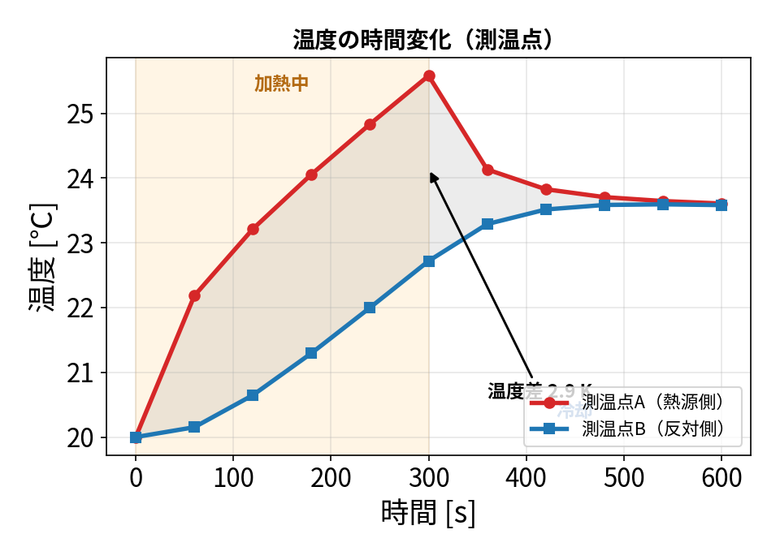
図 1 中空円筒の片側を 0〜300 秒加熱したときの、熱源側と反対側の温度（OpenFOAM）。加熱の終わりに 2.9 K の差がつく。
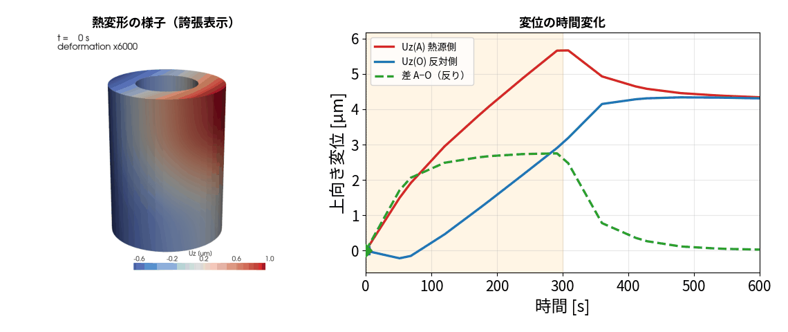
図 2 同じ計算の熱変形（FrontISTR、変形を拡大）。温度の差によって円筒が反る。
知りたいのは工具先端とワークの位置のずれです。しかし加工中の工具先端は、切粉やクーラント、工具交換があり、センサを置けません。タッチプローブなどで直接測る方法は、測るたびに加工を止める必要があります（blog_001 §0-5）。
測定のたびに解析モデルを直すには、データ同化が使えます。ただし、詳しい解析（OpenFOAM＋FrontISTR）をそのまま使うと重くなります。本研究の前段（104）では、実ソルバで EnKF を回すと、一連の計算に約 13 時間かかりました。
ここ（3-1〜3-4）を、発表の 2 ページ目に載せます。
| 流派 | やり方 | 弱いところ |
|---|---|---|
| ① 回帰・機械学習 | 温度を多点で測り、変位を回帰や学習で予測 | 学習した運転条件の外で外れやすい |
| ② FEM による補正 | 詳しい FEM で、温度から変位を計算 | 条件（熱伝達率、発熱量）が合わないと外れる |
| ③ 低次元化＋状態推定 | ROM とカルマンフィルタで温度場を推定（ETH 2024 など） | 観測は温度だけ。変位は出力 |
| ④ 直接測定による補正 | 変位を測って直接補正 | 加工中は測れない。状態の推定には戻さない |
③は変位を「出力」、④は変位を「補正の対象」として扱っています。変位を「観測」として状態推定に戻す取り組みは、調べた範囲では見当たりませんでした（英語 5 回・日本語 1 回の検索で、網羅的な調査ではありません。blog_008 §3・§8）。
センサの置き場所を ROM と感度で決める研究（Teshima ら 2024 など）や、熱モデルとベイズ推定で配置を評価する研究（Bünger ら 2023）はすでにあります。本研究は置き場所の考え方そのものではなく、変位も観測に入れたときに、推定したい量に合わせて置き場所を選び、実際のデータ同化で確かめる点に取り組みます。
少ない温度・変位の測定を解析モデルとデータ同化で組み合わせ、測れない場所の熱変形を推定する。そのために、どこで何を測ればよいかを、測る前に計算で決める。
| # | したこと | 結果（数値） |
|---|---|---|
| 1 | 正解を作る：中空円筒の片側加熱を、OpenFOAM（流体と固体の熱連成）→ FrontISTR（熱変形）で計算 | 双子実験の「本物」とする |
| 2 | 実ソルバでデータ同化：OI と EnKF | EnKF は温度 7.61 → 0.011 K、発熱量 14.93 W（真値 15 W）。ただし約 13 時間。OI は軽いが発熱量が約 9 W 止まり |
| 3 | 軽いモデルを作る：POD で温度分布の型を取り出し、Q-DEIM で代表 5 点を選んで ROM にする | 2 つの型で 99.9 %。0〜600 秒が 31 ms |
| 4 | 変位も観測に入れる：ROM と EnKF に、温度 2 点＋変位 2 点を入れる | 一度も測らない A・O の反りの誤差 0.076 µm（A・O を直接測ると 0.137 µm、温度 2 点だけだと 0.77 µm） |
| 5 | 置き場所を計算で選ぶ：反りの「測った後に残る不確かさ」が最小になる点を選ぶ | 既存の選び方と同じ条件で比べて最小（0.076 µm。A最適 0.089、D最適 0.108 µm） |
| 6 | 条件を変えて確かめる：発熱量 25 W、間欠加熱（作るのに使っていない条件） | 反りの誤差 0.07〜0.08 µm（上の 4 と同じ置き方） |
4〜6 の数値は、真値を OpenFOAM＋FrontISTR にし、2026-10-12 に IDW
で計算し直した結果です（加熱期 30〜300 秒、5
回の乱数の平均。results/holdout_AO_realsolver.json、results/placement_method_comparison.json）。
| 言えること | 言えないこと |
|---|---|
| オープンソース（OpenFOAM＋FrontISTR＋Python）だけで、解析からデータ同化までつないだ | 実機で同じ精度が出ること（実機は未検証） |
| この題材と条件で、測っていない場所の反りを当てられた | 「初めて提案した」こと（調査は網羅的ではない） |
| 置き場所を事前の計算で選べた | どの機械にもそのまま通用すること（熱源の位置が変わると ROM も配置も作り直し） |
| 発熱量も推定できた | 放熱（熱伝達）の条件まで正しく同定できたこと（600 秒では当たらない。blog_003 §4-0-b） |
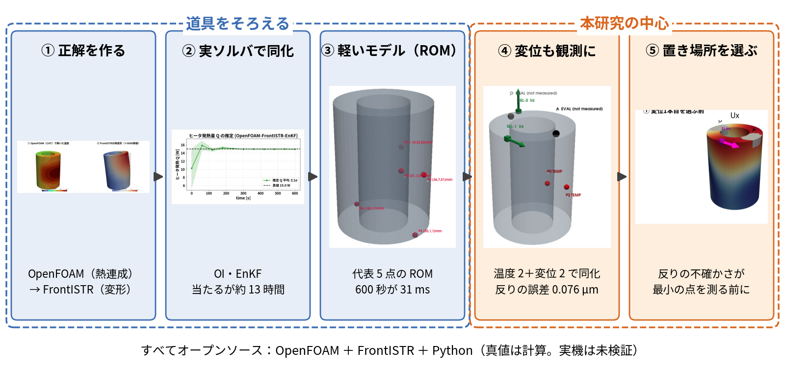
図 3 研究全体の流れ。①〜③で道具（正解データ、データ同化、軽い
ROM）をそろえ、④・⑤が本研究の中心（変位も観測に入れる、置き場所を計算で選ぶ）。作図：presentation/make_flow_figure.py。
| 段階 | 言うこと（各 10 秒ほど） |
|---|---|
| ① 正解を作る | OpenFOAM で温度、FrontISTR で熱変形を計算し、これを「本物」とする |
| ② 実ソルバで同化 | データ同化で発熱量まで当たるが、実ソルバでは約 13 時間かかる |
| ③ 軽いモデル | POD と Q-DEIM で代表 5 点の ROM にし、600 秒を 31 ms で計算する |
| ④ 変位も観測に | 温度だけでなく変位も測ってデータ同化し、測っていない場所の反りを当てる |
| ⑤ 置き場所を選ぶ | どこを測ればよいかを、知りたい量（反り）に合わせて測る前に計算で選ぶ |
ここ（5-1〜5-4）を、発表の 4 ページ目に載せます。5-5 は使ったプログラム、5-6 は話す内容です。
データ同化は、数値モデルの計算（予報）と、測った値（観測）を、それぞれの不確かさに応じて混ぜ合わせ、今の状態と未知のパラメータを推定する方法です。天気予報で発達した方法です。
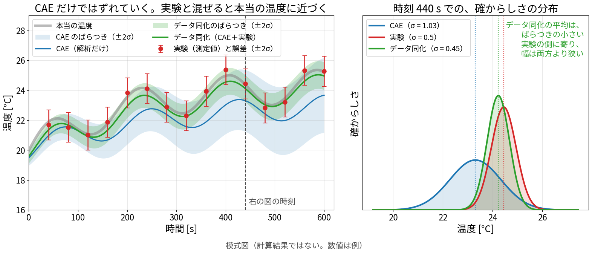
図
4a データ同化のイメージ（模式図。計算結果ではない）。左：CAE（解析だけ、青）は発熱や放熱の条件が分からず、波の大きさも時刻もずれ、ばらつき（帯）も広がる。実験（赤）はときどき測った値で、誤差がある。両方を混ぜたデータ同化（緑）は本当の温度（灰）に近づき、ばらつきも狭い。右：時刻
440 s
での確からしさの分布。データ同化の平均は、ばらつきの小さい実験の側に寄り、幅は
CAE・実験のどちらより狭い。作図：presentation/make_da_image_figure.py。
正規分布どうしを混ぜると、データ同化の平均 \(\mu_a\) とばらつき \(\sigma_a\) は次のようになります（\(f\)：CAE、\(o\)：実験）。
\[ \mu_a = \frac{\sigma_o^2\,\mu_f + \sigma_f^2\,\mu_o}{\sigma_f^2 + \sigma_o^2},\qquad \frac{1}{\sigma_a^2} = \frac{1}{\sigma_f^2} + \frac{1}{\sigma_o^2} \]
ばらつきの小さいほうを強く信じ、情報（\(1/\sigma^2\)）は足し算になります。
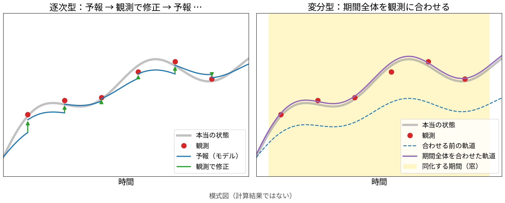
図 4 データ同化の 2
つの型（模式図。計算結果ではない）。左の逐次型は、予報し、観測が来るたびに修正して、次を予報する。右の変分型は、ある期間（窓）の観測すべてに合うように、期間の初めの状態などを変えて軌道全体を合わせる。作図：presentation/make_da_types_figure.py。
| 逐次型（フィルタ） | 変分型 | |
|---|---|---|
| 考え方 | 観測が来るたびに、その時刻の状態を修正する | ある期間の観測すべてに合うように、初めの状態などを最適化する |
| 代表的な方法 | カルマンフィルタ、最適内挿（OI）、アンサンブルカルマンフィルタ（EnKF）、粒子フィルタ | 3 次元変分法（3D-Var）、4 次元変分法（4D-Var） |
| 計算の中身 | 予報と観測の差に、重み（カルマンゲイン）を掛けて足す | 「予報からのずれ」と「観測とのずれ」の和を最小にする |
| 必要なもの | 予報の不確かさ（共分散）。EnKF は複数の予報（アンサンブル）から作る | 4D-Var では、モデルを逆向きにたどる式（アジョイント）が必要 |
| 向いている使い方 | 測りながら、その場で推定し続ける | 過去の期間をまとめて、よく合う状態・条件を求める |
逐次型の 1 回の修正（EnKF・OI）：
\[ \mathbf x_a = \mathbf x_f + K\,(\mathbf y - H\mathbf x_f),\qquad K = P_f H^{\mathsf T}\left(H P_f H^{\mathsf T} + R\right)^{-1} \]
：予報した状態、\(\mathbf
x_a\)：修正した状態、\(\mathbf y\)：観測、\(H\mathbf
x_f\)：予報から求めた観測の予想：予報の不確かさ（共分散）、\(R\)：観測の誤差の大きさ、\(K\)：重み（カルマンゲイン）変分型（3D-Var）で最小にする量：
\[ J(\mathbf x) = (\mathbf x - \mathbf x_b)^{\mathsf T} B^{-1} (\mathbf x - \mathbf x_b) + (\mathbf y - H\mathbf x)^{\mathsf T} R^{-1} (\mathbf y - H\mathbf x) \]
データ同化は天気予報で発達し、いまは海洋・地下水・燃焼・構造などにも使われています。よく使われる方法を整理します。
| 型 | 方法 | 中身 | 長所 | 短所 |
|---|---|---|---|---|
| 逐次型 | OI（最適内挿） | 予報の不確かさ \(B\) を固定して、観測のたびに直す | 軽い（予報は 1 本） | \(B\) が固定なので、パラメータ（発熱量など）は当たりにくい |
| 逐次型 | カルマンフィルタ（KF・EKF） | 予報の不確かさ \(P\) も、モデルの式で時間発展させる | 線形なら最適 | \(P\) が（状態の数）×（状態の数）で大きい。非線形には線形化（EKF）が必要 |
| 逐次型 | EnKF（アンサンブルカルマンフィルタ） | 少しずつ違う予報を何本も回し、そのばらつきから \(P\) を作る | モデルの微分がいらない。パラメータも状態に加えて推定できる | 予報を本数分回すので重い。本数が少ないと、関係のない遠くの点どうしに見かけの相関が出る |
| 逐次型 | LETKF（局所アンサンブル変換カルマンフィルタ） | EnKF の一種。観測に乱数を足さず、場所ごとに近くの観測だけで直す（局所化） | 見かけの相関が出にくい。場所ごとに独立に計算でき、並列で速い | 局所化の範囲を決める必要がある |
| 逐次型 | 粒子フィルタ | 予報を「粒子」として回し、観測に合う粒子ほど重みを大きくする | 正規分布を仮定しない（非線形・多峰に強い） | 状態の数が多いと、膨大な粒子が必要 |
| 変分型 | 3D-Var（3 次元変分法） | ある時刻で、「予報からのずれ」と「観測とのずれ」の和 \(J\) を最小にする | 大きな問題でも解ける | \(B\) が固定（OI と同じ答えになる） |
| 変分型 | 4D-Var（4 次元変分法） | 一定の期間（窓）の全時刻の観測に合うように、期間の初めの状態を最適化する。モデルの式に従う軌道の中で探す | 期間内の観測を、モデルと矛盾なく使える。精度が高い | モデルを逆向きにたどる式（アジョイント）が必要で、作るのが大変 |
| 両方 | ハイブリッド（En-Var、4DEnVar など） | 変分型の \(B\) に、アンサンブルのばらつきを混ぜる | 両方の長所を合わせる | 仕組みが複雑 |
| 期間でまとめる | ES-MDA（多段アンサンブルスムーザ） | 期間全体の観測を、同じデータで数回に分けて取り込む | 非線形の逆問題（パラメータ推定）に強い。地下水・油田で使われる | 期間の途中の推定には向かない |
4D-Var と LETKF（天気予報の現場でよく使われる 2 つ）
本研究で使ったのは EnKF（観測に乱数を足す型）です。状態が 7 つ（代表 5 点の温度、発熱量、放熱）と少ないので、局所化（LETKF）は使っていません。
| 理由 | 中身 |
|---|---|
| 測りながら推定したい | 加工中の補正では、観測が来るたびに今の状態を知りたい。本研究は 30 秒ごとに修正する |
| アジョイントがいらない | OpenFOAM と FrontISTR を組み合わせたモデルを逆向きにたどる式は用意されていない。EnKF は予報を何本か回すだけでよい |
| 発熱量も一緒に推定できる | 発熱量 \(Q\) と放熱 \(h\) を状態に加えると、アンサンブルの共分散を通して、温度・変位の観測から \(Q\) も直せる |
実際に試した結果と、そこで見えた課題は次のページ（§6）で示します。
| プログラム | すること |
|---|---|
dacore/oi.py |
OI の補正（共分散 \(B\) を固定） |
dacore/enkf.py |
EnKF の補正（共分散を 60 メンバーから数える） |
OI（dacore/oi.py）：重み \(K =
BH^{\mathsf T}(HBH^{\mathsf T}+R)^{-1}\) を 1
回だけ計算し、毎回同じ重みで直します。
def oi_gain(H, B, R):
HB = H @ B
S = HB @ H.T + R
K = np.linalg.solve(S, HB).T # K = B Hᵀ S⁻¹
return K
def oi_update(z_b, y, y_pred, K):
return z_b + K @ (y - y_pred) # z_a = z_b + K (y - y_pred)EnKF（dacore/enkf.py の
enkf_update）：共分散を 60
メンバーのばらつきから毎回数え直します。
zbar = Zf.mean(axis=0); ybar = Yf.mean(axis=0)
dZ = Zf - zbar # 状態のばらつき（メンバー × 7）
dY = Yf - ybar # センサの予想のばらつき
C_zy = dZ.T @ dY / (n_ens - 1) # 状態とセンサの共分散
C_yy = dY.T @ dY / (n_ens - 1) # センサの予想の分散
S = C_yy + R
eps = rng.multivariate_normal(np.zeros(len(y)), R, size=n_ens) # 観測の乱数
innov = (y[None, :] + eps) - Yf # 実測 − 予想
gain_T = np.linalg.solve(S, C_zy.T) # Kᵀ = S⁻¹ C_zyᵀ
Za = Zf + innov @ gain_T # z_a = z_f + K (y + ε − y_f)ここ（6-1〜6-4）を、発表の 5 ページ目に載せます。6-5 は使ったプログラム、6-6 は話す内容です。4 ページ目の方法を、熱流体・熱解析の実ソルバでそのまま回すと何が困るかを示します。
実機の測定はまだないので、双子実験で確かめます。
OI（最適内挿）は、予報の不確かさ（共分散）を固定して、予報 1 本だけで修正します。実ソルバ（OpenFOAM＋FrontISTR）で試した結果です（104）。
| OI | EnKF | |
|---|---|---|
| 全セルの温度の誤差 | 5.0 → 0.11 K | 7.61 → 0.011 K |
| 発熱量 Q（真値 15 W） | 約 9 W 止まり | 14.93 W |
| 計算時間 | 約 1.2〜1.6 時間 | 約 13 時間 |
EnKF は、条件を少しずつ変えた予報を何本も（アンサンブル）回し、そのばらつきから共分散を作ります。発熱量まで当たりましたが、
熱流体・熱解析の計算時間が、データ同化のネックになります。 現象の 600 秒を推定するのに、何時間もかかっていては、加工しながら補正することはできません。
計算時間に加えて、どこの温度（や変位）を測るかも結果を左右します。
実ソルバでのデータ同化は 104
のフォルダにあります（sample/104_0_openfoam_frontistr_da_enkf/）。
| プログラム | すること |
|---|---|
run/run_openfoam_fem_enkf.py |
実ソルバの EnKF を実行する（設定は
openfoam/da_openfoam_config.yaml） |
daof/of_fem_twin.py の run_fem_twin |
真値の計算、メンバーごとの OpenFOAM・FrontISTR、EnKF の補正を 1 サイクルずつ回す |
run/run_openfoam_fem_oi.py |
実ソルバの OI |
1
サイクルの中身（daof/of_fem_twin.py、抜粋）：メンバーの数だけ
OpenFOAM と FrontISTR を回すので重くなります。
for ci, t1 in enumerate(times): # 60 秒ごとの補正
for i, m in enumerate(members): # メンバーごとに
ok, log = of_case.run_window(m, t0, t1) # ← OpenFOAM（熱連成）を t0→t1 まで回す
yv, Tm = member_obs(m, t1, ...) # ← FrontISTR で変位を計算し、センサの値を作る
Z[i, :Nc] = Tm # 状態 = 固体 20,696 セルの温度 + 発熱量
Z[i, iQ] = Q[i]
Yf[i] = yv
Za = enkf_update(Z, y, None, R, rng, inflation=..., Yf=Yf) # 補正
for i, m in enumerate(members):
of_case.set_solid_state(m, t1, Za[i, :Nc], float(Za[i, iQ])) # 直した温度を OpenFOAM に書き戻すここ（7-1〜7-4）を、発表の 6 ページ目に載せます。7-5 は一般的な ROM との違い（補足）、7-6 は使ったプログラム、7-7 は話す内容です。5 ページ目の「実ソルバでは重い」を、OpenFOAM の結果から作る軽いモデル（ROM）で解決します。手順は 特異値分解（POD）→ Q-DEIM → ROM の 3 段です。
\[ X = \big[\,\mathbf u(t_1)-\bar{\mathbf u},\ \mathbf u(t_2)-\bar{\mathbf u},\ \dots,\ \mathbf u(t_{121})-\bar{\mathbf u}\,\big]\qquad(20{,}696 \times 121) \]
ROM を作るために OpenFOAM を回すのは、この 1 回だけです。データ同化の本番では OpenFOAM も FrontISTR も回しません。
\(X\) を特異値分解します。
\[ X = U\,\Sigma\,V^{\mathsf T} \]
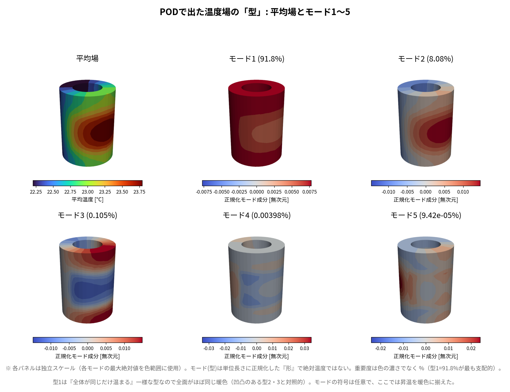
図 5 平均の温度と POD モード 1〜5。モード 1（91.8 %）は全体が温まる型、モード 2（8.08 %）はヒータ側と反対側の偏りの型。
2 つの型で 99.89 % を表せました。2 万セルの温度でも、ほとんどは 2 つの数 \(a_1, a_2\) で決まるということです。
図解した投影用スライドを次の2枚に分けて掲載します。 1枚目は「5点から何を求めるのか」、2枚目は「なぜその位置を選ぶのか」です。寄与率・係数時刻歴・全モード画像・QRの詳細を同じ1枚に重ねず、詳細は後半の補足に回します。
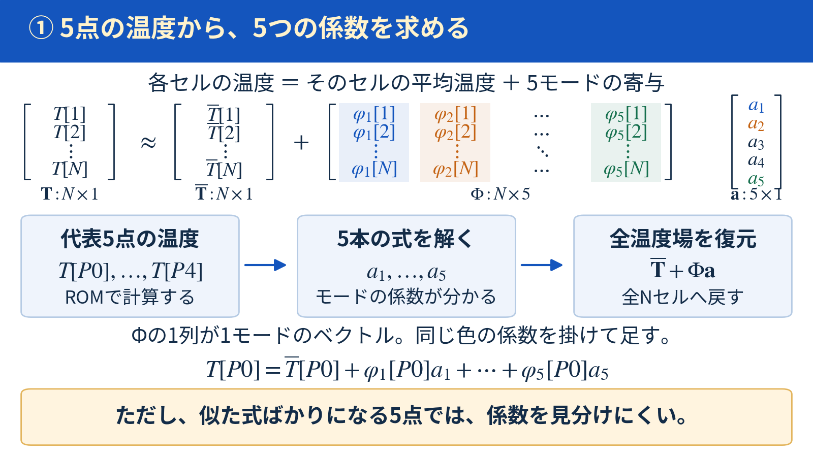
16:9の投影用スライド画像。青のモード1・橙のモード2・緑のモード5は、対応する係数と同じ色です。以下はベクトルの意味を補う図と、式の詳細です。
代表点を選ぶための、ベクトルの比較図
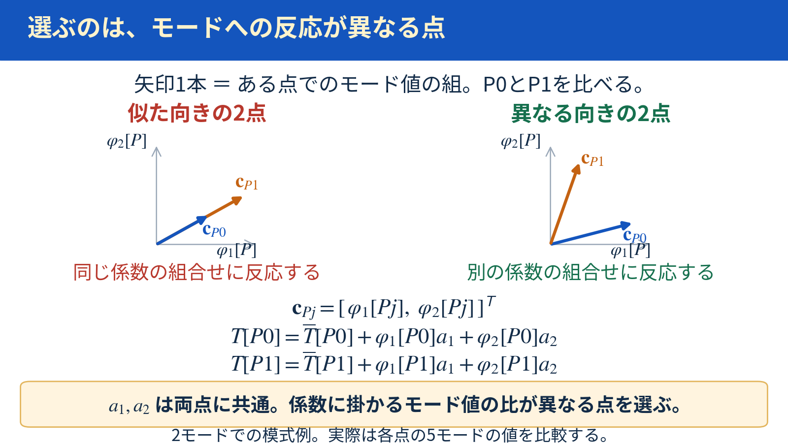
選点で比べるベクトルは、その点での各モードの値を並べたものです。2モードで書くと、
\[ \underbrace{\mathbf c_{P0}}_{2\times1} =\begin{bmatrix}\varphi_1[P0]\\\varphi_2[P0]\end{bmatrix}, \qquad \underbrace{\mathbf c_{P1}}_{2\times1} =\begin{bmatrix}\varphi_1[P1]\\\varphi_2[P1]\end{bmatrix}. \]
両点の温度は、共通の係数 \(a_1,a_2\) を使い、
\[ \begin{aligned} T[P0]&\approx\overline T[P0]+\varphi_1[P0]a_1+\varphi_2[P0]a_2,\\ T[P1]&\approx\overline T[P1]+\varphi_1[P1]a_1+\varphi_2[P1]a_2 \end{aligned} \]
となります。\(a_1,a_2\) に掛かるモード値の比が同じなら、2点から分かる係数の組合せも同じです。例えば \(\mathbf c_{P1}=\lambda\mathbf c_{P0}\) なら、
\[ T[P1]-\overline T[P1] \approx\lambda\{T[P0]-\overline T[P0]\} \]
となり、2点の温度から2係数を別々には決められません。逆向きでも比例していれば同様です。同一直線上にないベクトルを持つ点を選ぶと、係数を区別するための別の式が得られます。ほぼ同じ向きの組合せも、誤差に弱くなるため避けたい配置です。
図の矢印は点ごとのモード値を示し、温度そのものを示す矢印ではありません。 温度 \(T[P0]\) はスカラーです。係数を掛ける前のPOD値を比較することで、未知の係数の値に依存せず、点を選べます。
上の全温度場の式では \(\Phi\) の1列が、全Nセルにわたる1モードでした。一方、この選点図では、\(\Phi\) の1行が、その点での各モード値です。その行を縦に並べた \(\mathbf c_{Pj}\) を矢印で比較しています。実際は5モードなので、各点のベクトルは5次元です。
スライド冒頭の一文
温度分布を5つのモードで表すと、求めるのは5つの係数になる。
5点の温度から5本の式を作り、その係数を求める。
ある時刻の温度場を、全セルの成分まで書くと次のようになります。\(N\) はOpenFOAMの固体セル数です。
\[ \underbrace{\begin{bmatrix} T[1]\\T[2]\\\vdots\\T[N] \end{bmatrix}}_{\mathbf T:\ N\times1} \approx \underbrace{\begin{bmatrix} \overline T[1]\\\overline T[2]\\\vdots\\\overline T[N] \end{bmatrix}}_{\overline{\mathbf T}:\ N\times1} + \underbrace{\begin{bmatrix} \varphi_1[1]&\varphi_2[1]&\cdots&\varphi_5[1]\\ \varphi_1[2]&\varphi_2[2]&\cdots&\varphi_5[2]\\ \vdots&\vdots&\ddots&\vdots\\ \varphi_1[N]&\varphi_2[N]&\cdots&\varphi_5[N] \end{bmatrix}}_{\Phi:\ N\times5} \underbrace{\begin{bmatrix}a_1\\a_2\\a_3\\a_4\\a_5\end{bmatrix}}_{\mathbf a:\ 5\times1}. \]
行はセル、列はモードです。 例えばセル \(i\) の温度は、
\[ T[i]\approx\overline T[i]+\varphi_1[i]a_1+\varphi_2[i]a_2 +\varphi_3[i]a_3+\varphi_4[i]a_4+\varphi_5[i]a_5 \]
です。\(\overline T[i]\) はセル \(i\) の時間平均温度、\(\varphi_j[i]\) はそのセルでのモード \(j\) の値です。\(a_1,\ldots,a_5\) は時刻ごとに変わる係数で、全セルに共通して使います。
5点P0〜P4について式を取り出すと、
\[ \underbrace{\begin{bmatrix} T[P0]\\T[P1]\\T[P2]\\T[P3]\\T[P4] \end{bmatrix}}_{\mathbf T_P:\ 5\times1} \approx \underbrace{\begin{bmatrix} \overline T[P0]\\\overline T[P1]\\\overline T[P2]\\\overline T[P3]\\\overline T[P4] \end{bmatrix}}_{\overline{\mathbf T}_P:\ 5\times1} + \underbrace{\begin{bmatrix} \varphi_1[P0]&\varphi_2[P0]&\cdots&\varphi_5[P0]\\ \varphi_1[P1]&\varphi_2[P1]&\cdots&\varphi_5[P1]\\ \varphi_1[P2]&\varphi_2[P2]&\cdots&\varphi_5[P2]\\ \varphi_1[P3]&\varphi_2[P3]&\cdots&\varphi_5[P3]\\ \varphi_1[P4]&\varphi_2[P4]&\cdots&\varphi_5[P4] \end{bmatrix}}_{\Phi_P:\ 5\times5} \underbrace{\begin{bmatrix}a_1\\a_2\\a_3\\a_4\\a_5\end{bmatrix}}_{\mathbf a:\ 5\times1}. \]
行は点、列はモードです。 1行目は、P0の温度を「P0の平均温度＋5モードの寄与」で表す式です。まとめると \(\mathbf T_P\approx\overline{\mathbf T}_P+\Phi_P\mathbf a\) です。ここで \(\overline T[P0]\) はP0点の時間平均温度です。
下段は横向きの流れにする
flowchart LR
A["代表5点の温度"] --> B["5本の式から<br/>5つの係数を求める"]
B --> C["5モードを足し合わせ<br/>全セルの温度を復元"]
この1枚の結論
5点を選ぶ目的は、全温度場を表す5つの係数を求めること。
ただし、どの5点でもよいわけではない。
口頭説明（約30秒）：「PODで温度分布の形は先に求めてあります。時刻ごとに変わるのは、その形をどれだけ足すかという5つの係数です。各点の温度から1本ずつ式ができるので、5点あれば5本の式になります。ただし、その5本が似た式ばかりだと、係数を分けて求められません。そこで点の位置を選びます。」
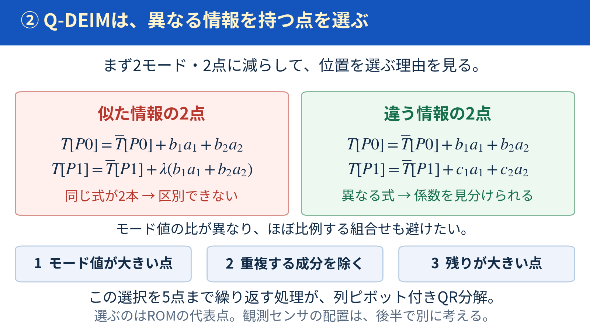
2モードの模式例。\(b_j,c_j\) は各点のモード値、\(\lambda\) は比例係数。右側は2本の式が互いに比例しない場合です。
スライド冒頭の一文
同じように反応する点を増やしても、各モードの係数を区別しにくい。
Q-DEIMは、すでに選んだ点とは違うモード情報を持つ点を順に選ぶ。
まず2モード・2点に減らして、点の選び方の違いを示します。\(b_1,b_2,c_1,c_2\) は各点でのモード値、\(\lambda\) は比例係数です。
| 選び方 | 2点から得られる式 | 何が起きるか |
|---|---|---|
| 似た情報の2点 | \(T[P0]=\overline
T[P0]+b_1a_1+b_2a_2\) \(T[P1]=\overline T[P1]+\lambda b_1a_1+\lambda b_2a_2\) |
2本目は1本目の定数倍。\(a_1,a_2\) を別々に決められない |
| 違う情報の2点 | \(T[P0]=\overline
T[P0]+b_1a_1+b_2a_2\) \(T[P1]=\overline T[P1]+c_1a_1+c_2a_2\) |
\(b_1c_2-b_2c_1\ne0\) なら2係数を区別できる。ほぼ比例する組合せも避けたい |
実際は5モードなので、各点での5つのモード値を比較します。
Q-DEIMの選び方は、次の3行で示す
この処理を行うのが、\(\Phi^{\mathsf T}\) に対する列ピボット付きQR分解です。単に温度が高い点や、互いに遠い点を選ぶ方法ではありません。
この1枚の結論
「モードの値が大きい」ことと「選択済みの点と情報が重複しにくい」ことを使い、
5つの係数を安定に求めやすい代表点を選んだ。
口頭説明（約40秒）：「例えば2点とも全体の温まり方に同じように反応すると、全体が温まったのか、左右の温度差が変わったのかを区別できません。そこで、最初に反応が大きい点を取り、次は、その点だけでは分からない変化に反応する点を取ります。この処理を5点まで繰り返すのが今回のQ-DEIMです。」
発表での区別：ここで選ぶのは、ROMで温度を計算し、全温度場を復元するための代表点です。後半で選ぶ「反りの推定に適した観測センサ位置」とは、目的が異なります。
実際は5モードなので、各候補点 \(i\) を「その点での5つのモード値」で表します。
\[ \underbrace{\mathbf c_i}_{5\times1} =\begin{bmatrix}\varphi_1[i]\\\varphi_2[i]\\\varphi_3[i]\\\varphi_4[i]\\\varphi_5[i]\end{bmatrix}. \]
\(\Phi_P\) が正則なら、係数は次の小さな連立方程式から求まります。
\[ \underbrace{\mathbf a}_{5\times1} \approx\underbrace{\Phi_P^{-1}}_{5\times5} \underbrace{(\mathbf T_P-\overline{\mathbf T}_P)}_{5\times1}. \]
この段階では、温度の式 \(\mathbf T_P\approx\overline{\mathbf T}_P+\Phi_P\mathbf a\) から平均を両辺で引き、係数 \(\mathbf a\) を解いています。
代表点温度に誤差 \(\boldsymbol\varepsilon_P\) があると、係数と全温度場への影響は、
\[ \delta\mathbf a=\Phi_P^{-1}\boldsymbol\varepsilon_P,\qquad \delta\mathbf T_{\mathrm{full}}=\Phi\Phi_P^{-1}\boldsymbol\varepsilon_P \]
となります。似た行ばかりの行列では、温度の小さな誤差が係数の大きな誤差へ増幅されやすくなります。 Q-DEIMは不安定な選び方を避け、モードを見分けやすい組合せを得る方法です。全候補の組合せで最良になることまで、今回証明したわけではありません。
保存済みの results/qdeim_points.npz の5点について、\(\Phi_P\)
のランクが5、2ノルム条件数が約3.15であること、保存済み基底へのピボット付きQRが同じ5点を返すことを確認しました。これは今回の基底から係数を解く行列の確認で、学習外の温度分布やROM時間発展の精度を保証する値ではありません。
なぜ5点か：今回は5モードを保持し、その5係数を求めるため5点を選びました。5点という数自体が普遍的な最適値ではありません。2モードの寄与率が大きいことだけで、2点で必要な復元精度が得られるとは限りません。5モードに対して6点以上を使い、最小二乗で係数を求める構成もあります。
ここからは、スライド②の3段階を行列で書いた補足です。最初に「セルごとのモード値」を並べ、最後にQR分解の式へつなげます。
① 1セルの情報は、その場所での5つのモード値です。
例えばセル \(i\) の温度は、
\[ T[i]\approx\overline T[i]+ \varphi_1[i]a_1+\varphi_2[i]a_2+\cdots+\varphi_5[i]a_5 \]
です。係数 \(a_1,\ldots,a_5\) に掛かる5個の値を、ひと組にします。
\[ \underbrace{\mathbf c_i}_{5\times1} =\begin{bmatrix}\varphi_1[i]\\\varphi_2[i]\\\varphi_3[i]\\\varphi_4[i]\\\varphi_5[i]\end{bmatrix}. \]
\(\mathbf c_i\) は座標でも温度そのものでもありません。「そのセルの温度が、各モードの係数にどう反応するか」を並べたものです。
② 全セル分を横に並べます。
\[ \underbrace{\Phi^{\mathsf T}}_{5\times N} =\left[ \underbrace{\mathbf c_1}_{\text{セル1}}\quad \underbrace{\mathbf c_2}_{\text{セル2}}\quad \cdots\quad \underbrace{\mathbf c_N}_{\text{セル}N} \right],\qquad N\text{ は固体セル数}. \]
③ 似た列を重ねて選ばないように、5列を選びます。
例えば最初に選んだ列の単位ベクトルを \(\mathbf q_1\) とすると、各候補に残る成分は、
\[ \mathbf r_i=\mathbf c_i-\mathbf q_1(\mathbf q_1^{\mathsf T}\mathbf c_i). \]
選んだ列と比例する候補なら \(\mathbf r_i=\mathbf0\) となり、新しい情報を追加しません。2列目以降も、選択済みのすべての方向の成分を除いてから比較します。
④ この並べ替えと成分の分解を、QR分解の記号でまとめます。
\[ \underbrace{\Phi^{\mathsf T}}_{5\times N} \underbrace{\Pi}_{N\times N} = \underbrace{Q}_{5\times5} \underbrace{R}_{5\times N}. \]
| 記号 | この計算での意味 |
|---|---|
| \(\Pi\) | 候補セルの列を、選んだ順が先頭に来るよう並べ替える行列 |
| \(Q\) | 成分を除くために使う、互いに直交した5つの方向 |
| \(R\) | 各セルの列を、\(Q\) の方向の成分で表した係数 |
選ばれる点は、並べ替え後の先頭5列に対応するセル番号です。
\(\Pi\)
の要素自体がセル座標を表すわけではありません。実装では \(\Pi\)
の巨大な行列を作らず、並べ替え順の番号列 piv
を受け取ります。
_, _, piv = scipy.linalg.qr(Phi.T, pivoting=True)
selected_cells = piv[:5] # 先頭5個のセル番号を、P0〜P4として使う元のセル番号が selected_cells[j]
の点に、代表点の名前Pjを付けています。P0が元メッシュのセル0という意味ではありません。
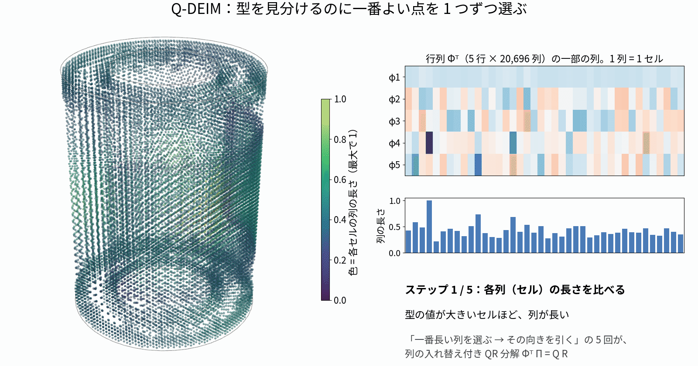
図 6a Q-DEIM の選び方（実際の円筒、モード 5
本）。左：各セル（点）の色が、その時点の列の長さ（最大で
1）。赤い球が今回選んだ点、白い球がすでに選んだ点。右上：行列 \(\Phi^{\mathsf T}\) の一部の列（1 列 = 1
セル、赤枠が選んだ列）。右中：列の長さ。選んだ列の向きを引くと、選んだ列は
0 になり、似た列も短くなる。P0 → P1 → P2 → P3 → P4
の順に選ばれ、scipy.linalg.qr(..., pivoting=True)
の結果と同じ順であることを確かめた。きれいに見るなら
img/qdeim_animation.mp4。作図：run/make_qdeim_animation.py。
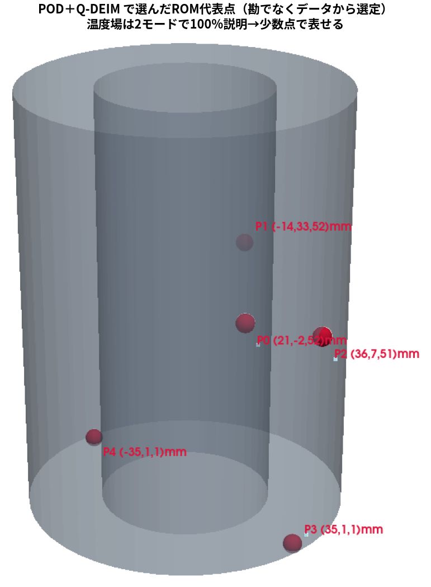
図 6 Q-DEIM で選んだ代表 5 点（P0〜P4）。ヒータ側の中段（P0・P2）、反対側寄りの中段（P1）、底面近くの両側（P3・P4）が選ばれた。
5 点の温度が分かれば、全セルの温度は gappy-POD で戻せます（型の重みを 5 点の温度から最小二乗で求め、型を足し合わせる）。
代表 5
点をノードにして、熱容量と熱コンダクタンスでつないだ熱回路（集中定数モデル）を作ります。ノード
\(i\)（\(i = 0, \dots,
4\)）の式は次のとおりです。
\[ C_i\,\frac{dT_i}{dt} = \sum_{j \ne i} K_{ij}\,(T_j - T_i) + q_i(t) - h\,(T_i - T_{\mathrm{air}}) \]
未知の 16 個（\(C\) 5 個、\(K\) 10 個、\(h\) 1 個）を、5 点の温度の時刻歴が OpenFOAM と一致するように最小二乗で合わせました。
\[ \hat{\boldsymbol\theta} = \arg\min_{\boldsymbol\theta}\ \sum_{p=0}^{4}\sum_{k=1}^{121}\Big(T_p^{\mathrm{ROM}}(t_k;\boldsymbol\theta) - T_p^{\mathrm{OF}}(t_k)\Big)^2,\qquad \boldsymbol\theta = (C_0,\dots,C_4,\ K_{01},\dots,K_{34},\ h) \]
scipy.optimize.least_squares（非線形最小二乗、範囲の制約つき）。\(\boldsymbol\theta\) を決めるたびに ROM を
0〜600 秒計算し直す。| 係数 | 合わせた値 |
|---|---|
| 熱容量 \(C_0 \ldots C_4\) [J/K] | P0 136、P1 323、P2 93、P3 243、P4 416（合計 1,211） |
| 熱コンダクタンス \(K_{ij}\) [W/K] | P0–P2 17.5、P0–P3 6.21、P1–P4 2.60、P3–P4 2.11、P1–P2 1.62、P0–P1 0.84。P0–P4・P1–P3・P2–P3・P2–P4 は下限の 0.0001（ほぼ 0） |
| 放熱 \(h\) [W/K] | 0.0154（5 点それぞれに掛かるので、全体で 5 × 0.0154 = 0.077 W/K） |
（results/rom_calibrated_pod.npz、run/build_calibrate_rom.py）
最小二乗は、初期値によっては近くの谷（局所最適）で止まります。そこで、16
個の係数の初期値を範囲の中からばらばらに選び（対数で一様、40
通り）、同じ計算をやり直しました（run/calib_multistart.py、results/calib_multistart.json、計算
13 分）。
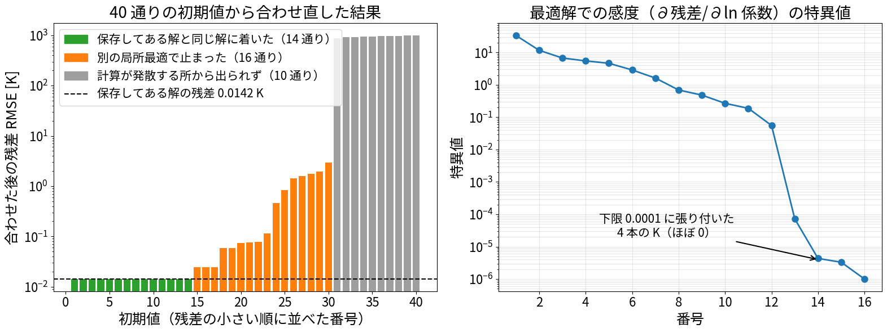
図 7a 左：40 通りの初期値から合わせた後の残差。緑は保存してある解と同じ解に着いたもの、橙は別の局所最適、灰は時間刻み 2 秒で計算が発散する係数から出られなかったもの。右：保存してある解での、残差の係数についての感度の特異値。
| 結果 | 数 | 中身 |
|---|---|---|
| 保存してある解と同じ解に着いた | 14 | 残差 0.0142 K。16 個の係数がすべて 0.05 % 以内で一致 |
| 別の局所最適で止まった | 16 | 残差 0.025〜3.0 K（保存してある解より悪い） |
| 計算が発散する所から出られなかった | 10 | 初期値の熱容量が小さすぎ、時間刻み 2 秒の計算が発散 |
円筒の物性は炭素鋼相当（密度 7,850 kg/m³、比熱 480 J/(kg K)、熱伝導率 50 W/(m K)）、大きさは内半径 20 mm・外半径 37.5 mm・高さ 100.5 mm です。
① 熱容量：合計は物性からの値とほぼ同じ（妥当）
\[ \rho\,c\,V = 7850 \times 480 \times \pi\,(0.0375^2 - 0.020^2) \times 0.1005 \approx 1{,}197\ \mathrm{J/K} \]
ROM の合計 1,211 J/K との差は約 1 % です。5 点は円筒をいくつかの領域に分けて受け持っていて、その熱容量の合計が、円筒全体の熱容量と合っています。ヒータの P2 が一番小さい（93 J/K）のは、温度がすぐ上がる狭い範囲を受け持っているためと考えられます。
② 熱コンダクタンス：大きさはおおむね妥当。ただし 1 本ずつは物理の熱の通り道と一致しない
棒の熱伝導 \(K = k A / L\) から、合わせた \(K\) を「同じ熱を流すのに必要な断面積」\(A = K L / k\) に直して比べます。円筒の壁の断面積は、周方向に流れるなら 厚さ 17.5 mm × 高さ 100.5 mm ≈ 18 cm²、上下に流れるなら 円環 ≈ 32 cm² です。
| 2 点 | 距離 \(L\) | 合わせた \(K\) | 断面積に直すと \(A = KL/k\) |
|---|---|---|---|
| P0–P2（どちらもヒータ側の中段） | 17 mm | 17.5 W/K | 61 cm² |
| P0–P3（ヒータ側、中段と底面近く） | 53 mm | 6.21 W/K | 65 cm² |
| P1–P4 | 64 mm | 2.60 W/K | 33 cm² |
| P3–P4（底面近くの両側） | 70 mm | 2.11 W/K | 30 cm² |
| P1–P2 | 57 mm | 1.62 W/K | 18 cm² |
| P0–P1 | 50 mm | 0.84 W/K | 8 cm² |
③ 放熱 \(h\)：物理からの値よりかなり小さい（妥当とは言えない）
OpenFOAM から求めた表面の熱伝達率は全面平均で 13.4 W/(m² K)（blog_001 §3-4）、表面積は約 0.043 m² なので、
\[ h_{\text{物理}} \approx 13.4 \times 0.043 \approx 0.57\ \mathrm{W/K} \]
です。ROM の全体の放熱 0.077 W/K は、その約 1/7 です。
まとめ：熱容量の合計は物理と合う。熱コンダクタンスは大きさは合い、値も一意に決まったが、ROM の形の仮定のため 1 本ずつは物理の通り道と一致しない（0 になった 4 本は決まらない）。放熱は物理の値より小さく、600 秒の計算では決まらない。ROM は「この範囲の温度を再現する」ためのモデルで、係数 1 つ 1 つを物性として読むのは注意が必要です。

図 7 代表 5 点の熱回路。線の太さが合わせた熱コンダクタンス。オレンジの P2 に発熱を入れる。
| 結果 | |
|---|---|
| OpenFOAM との差（5 点の温度、合わせた後の残差） | 0.014 K |
| 0〜600 秒の計算時間（ROM 1 本） | 約 31 ms |
この熱回路は 1D-CAE（Modelica などの熱回路網）と同じ形です。違いは、ノードの場所を POD・Q-DEIM でデータから選び、係数を 3D の計算に合わせたことです。
ROM が出すのは代表 5 点の温度だけです。そこで、5 点の温度から gappy-POD で全体に戻しました。データ同化は使っていません。

図 7b ROM を解き、代表 5 点の温度から gappy-POD
で戻した温度（色）と熱変形（形、2000
倍）。色の範囲・向き・倍率は正解（OpenFOAM → FrontISTR）の
img/temp_deform_anim.gif とそろえてある。300
秒のコマ：img/temp_deform_t300_rom.png。作図：run/make_temp_deform_anim.py rom。
| 正解（OpenFOAM → FrontISTR）との差（0〜600 秒、30 秒ごと） | 値 |
|---|---|
| 節点温度の RMSE（全時刻の最大） | 0.025 K |
| 変位の最大値の差（全時刻の最大） | 0.037 µm |
| 300 秒の最高温度・変位の最大（ROM） | 25.7 °C、6.5 µm |
ROM は同じ 15 W の計算に合わせたものなので、よく合うのは当然です。別の発熱条件で使えるかは 8 章で確かめます。
ROM（低次元モデル）の作り方はいくつかあります。本研究の ROM は、よく使われる方法と少し違います。
| 作り方 | 中身 | 必要なもの |
|---|---|---|
| クリロフ部分空間法（モーメント合わせ） | 有限要素の式 \(C\dot T + KT = Fq\) の行列から、入力（発熱）から出力（見たい点）への伝わり方が元と合うように縮める。構造・熱の FEM でよく使われる | 解析ソルバーの行列（\(C\), \(K\), \(F\)） |
| POD–ガラーキン | POD の型を使って、元の式（行列）を型の数まで縮める | 結果（スナップショット）と、元の式の行列 |
| 本研究（POD・Q-DEIM＋熱回路） | POD の型から代表 5 点を選び、5 点の熱回路の係数を OpenFOAM の結果に合わせる | 結果（スナップショット）だけ |
商用ソフトの ROM の機能とも比べておきます（各社の公開資料の範囲。バージョンで変わるので、使うときは各社の資料で確かめてください）。
| ソフト | ROM の機能 | 中身 |
|---|---|---|
| COMSOL Multiphysics | Model Reduction（モデル縮約）のスタディ | 方法は 3 つ。Modal（固有モードで縮約、既定。入力と出力を持ち、縮約した行列を書き出せる）、AWE（周波数応答を速く掃引する）、POD（計算結果から型を取り出す）。学習用の計算と、ROM の作成の 2 段で作る |
| Ansys Twin Builder | ROM Builder | Static ROM（定常の結果から作る）、LTI ROM（線形・時不変。流れを固定した熱伝導など）、LPV ROM（冷却の流量などが変わる場合）、Nonlinear Dynamic ROM（放射・自然対流などの非線形）。Fluent・Icepak・Mechanical の結果から作り、デジタルツインに使う |
| Siemens Simcenter Reduced Order Modeling | ROM の作成・確かめ・書き出しの専用ソフト | 計算と試験のデータから ROM を作る。熱では、Simcenter 3D（NX）の熱の行列を読み込み、クリロフ部分空間法（多周波数）で縮めることができる（2504 版）。ほかに平衡打ち切りなど。境界条件が変わる表面のモデルは POD で縮める。Simcenter Amesim・Flomaster（1D）で使う |
| Siemens Simcenter FLOEFD・Flotherm | BCI-ROM | 熱伝導だけの 3D モデルから、境界条件によらない ROM を作り、行列・VHDL-AMS・FMU で書き出す（電子機器の熱） |
| 本研究 | 自作（Python） | POD・Q-DEIM で代表 5 点を選び、熱回路の係数を OpenFOAM の結果に合わせる |
NX（Simcenter 3D）の縮約モデルとの違い
| NX（Simcenter 3D）の縮約 | 本研究の ROM | |
|---|---|---|
| 構造 | スーパーエレメント（部品ごとに、境界の自由度だけを残す静縮約・Craig–Bampton 法）。大和研の「部品ごとに縮約してつなぐ」と同じ考え方 | 構造は縮約していない。FrontISTR で「POD の型ごとの変位」を前もって計算し、足し合わせる |
| 熱 | FEM の熱の行列（\(C\), \(K\)）をそのまま縮める（クリロフ部分空間法など）。元の式と物理がつながっている | 行列は使わず、OpenFOAM の温度の結果だけから、5 点の熱回路の係数を合わせる |
| 必要なもの | NX の FEM モデル（行列） | 計算結果のファイル（OpenFOAM でも何でもよい） |
| 流体を含む熱 | 流体（CFD）の熱連成は、そのままでは行列にしにくい | 流体と固体の熱連成（CHT）の結果からでも作れる |
| 係数の物理の意味 | 元の行列から作るので保たれる | 熱容量の合計は物理と合う。熱コンダクタンスは一意に決まるが物理の通り道とは一致しない。放熱は 600 秒では決まらない（7-4） |
ROM は、どのソフトでも次の 2 段で使います。
| 段 | すること | 本研究では |
|---|---|---|
| オフライン（前もって 1 回） | 詳しい解析（FEM・CFD）を回す → 縮める（POD、クリロフ、モード縮約など）→ 元の解析と比べて確かめる → 書き出す | OpenFOAM → POD・Q-DEIM → 熱回路の係数合わせ → FrontISTR で型ごとの変位（約 1 時間＋数十秒） |
| オンライン（現場で何度も） | ROM で速く予測する。センサの値と混ぜて（データ同化・カルマンフィルタ）、測れない場所の値を推定し、画面に出す（仮想センサ） | ROM＋EnKF で 30 秒ごとに補正（600 秒が 31 ms）。画面表示・実機接続は未実施 |
Siemens の公式ブログ（仕組み、リアルタイムの構成）から読み取れる範囲です。
| 項目 | 中身 |
|---|---|
| すること | 少ない実測と縮約 FEM を組み合わせ、センサを置けない場所の荷重・ひずみ・加速度・速度・変位を推定する（仮想センサ） |
| 実測との融合 | カルマンフィルタ（種類は記事に書かれていない）。モデルの誤差と測定の誤差の両方を補う |
| リアルタイム表示 | Simcenter Testlab RT（リアルタイム対応のハードとソフト）で動かし、推定結果を可視化ツールに流して、全体の応力・変形を画面で見る |
| 書き出し | 実行可能デジタルツイン（xDT）として書き出し、現場の機器（エッジ）・リアルタイム機器・クラウドで動かす。オフラインでは FMU として配置する |
| 対象 | この 2 つの記事では構造（風車のブレード、車両の部品など）。熱は書かれていない |
本研究との関係：考え方（縮約モデル＋カルマンフィルタ＋少ないセンサで測れない場所を推定）は、本研究と同じです。違いは、Siemens の記事の対象が構造（荷重・ひずみ）であることと、本研究が熱（流体と固体の熱連成の結果から作った ROM）で、温度と変位の両方を観測に使い、発熱量も推定していることです。ただし、Siemens は熱の ROM（Flotherm）とカルマンフィルタを組み合わせた研究も出していて、熱への広がりは十分ありえます（docs/26 §2・§6）。本研究の ROM も、600 秒を 31 ms で計算でき、リアルタイムに使える速さはありますが、実機のセンサとつないで画面に出すところまでは試していません（未実施）。
FMU（Functional Mock-up Unit）は、計算モデルを「部品」として、ほかのソフトに持っていくための共通の形式です。規格は FMI（Functional Mock-up Interface）で、Modelica Association が決めています。
中身：1 つの zip
ファイルに、入力・出力・パラメータの説明（modelDescription.xml）と、計算の本体（コンパイルした実行ファイル、またはソースコード）が入っている。
2 つの型：
使い道：COMSOL・Ansys・Siemens などで作った ROM を FMU で書き出すと、Simulink、Amesim、OpenModelica、Python（FMPy）など、別のソフトで動かせる。1D-CAE（システムのモデル）に、3D 解析から作った ROM を部品として入れられる。
本研究との関係：本研究の ROM は Python のままで、FMU にはしていません。5 点の熱回路は Modelica で書ける形（熱容量と熱コンダクタンス）なので、FMU にして OpenModelica の 1D-CAE に入れることはできるはずです（未実施）。
クリロフ部分空間法や POD–ガラーキンは、元の式（行列）を数学的に縮めるので、物理との対応がはっきりしています。ただし、OpenFOAM の流体と固体の熱連成から行列を取り出すのは大変です。
本研究は、OpenFOAM の温度の結果ファイルだけから作れます。その代わり、熱回路の係数は合わせ込んだ値で、元の式から決まるわけではありません。作った条件から外れたときの精度は、7 ページ目のように確かめる必要があります。
1D-CAE（熱回路網）と同じ形なので、係数の意味（熱容量・熱コンダクタンス）は読み取れます。
今回の2枚の図解は run/make_presen_qdeim_explainer.py
から作成しています。図中の2モード例は選点理由を説明する模式例で、実際の解析結果の分布ではありません。
| プログラム | すること |
|---|---|
run/select_points_qdeim.py |
121 枚の温度の特異値分解（POD）と、Q-DEIM で代表 5 点を選ぶ |
run/make_qdeim_animation.py |
Q-DEIM の選び方のアニメーション（図 6a）。「一番長い列を選ぶ → その向きを引く」を 5 回くりかえし、QR 分解と同じ点になることを確かめる |
run/build_calibrate_rom.py |
熱回路の 16 個の係数を、OpenFOAM の 5 点の温度に最小二乗で合わせる |
dacore/rom_general.py |
熱回路を時間積分する（4 次のルンゲ・クッタ、2 秒刻み） |
run/make_temp_deform_anim.py rom |
ROM を解き、gappy-POD で全体の温度と変位に戻した GIF（図 7b）。引数なしなら正解の GIF |
POD と Q-DEIM（run/select_points_qdeim.py）：
mean = X.mean(axis=1); Xc = X - mean[:, None] # 各セルの時間平均を引く
U, S, Vt = np.linalg.svd(Xc, full_matrices=False) # 特異値分解 X = U Σ Vᵀ
energy = S**2 / (S**2).sum() # 寄与率
_, _, piv = qr(U[:, :RMODE].T, pivoting=True) # Q-DEIM：Φᵀ に列の入れ替え付き QR
pts = list(piv[:NPT]) # 入れ替えの先頭 5 列 = 代表 5 点係数の合わせ込み（run/build_calibrate_rom.py）：
def forward(vec): # 係数 vec = [C 5 個, K 10 個, h 1 個] で ROM を計算
C = vec[:NPT]; K = rg.tri_to_matrix(vec[NPT:NPT+ne], NPT); h = vec[NPT+ne]
... # 0〜600 秒を積分して 5 点の温度の時刻歴を返す
def resid(vec):
return (forward(vec) - Yobs).ravel() # ROM − OpenFOAM（5 点 × 全時刻）
sol = least_squares(resid, x0, bounds=(lb, ub)) # 差の 2 乗和を最小にする熱回路の時間積分（dacore/rom_general.py の
integrate_ensemble）：\(C\,dT/dt
= -(\sum K + h)T + KT + hT_{\mathrm{air}} + q\) を行列で書き、60
メンバーを一度に進めます。
M = Kmat / C[:, None] # 他ノードからの熱流入
M[idx, idx] = -(Ksum + h) / C # 対角：自分から出ていく熱と放熱
def deriv(Tv, t):
heat[:, heat_node] = heater_power_W(t, q_scale) / C[heat_node] # P2 だけに発熱
return M @ Tv + h * T_AIR / C + heat
k1 = deriv(T, t); k2 = deriv(T + 0.5*dt*k1, t + 0.5*dt) # 4 次のルンゲ・クッタ
k3 = deriv(T + 0.5*dt*k2, t + 0.5*dt); k4 = deriv(T + dt*k3, t + dt)
T = T + dt/6 * (k1 + 2*k2 + 2*k3 + k4)ここ（8-1〜8-4）を、発表の 7 ページ目に載せます。8-5 は使ったプログラム、8-6 は話す内容です。6 ページ目の ROM は、OpenFOAM の計算 1 本（15 W を 0〜300 秒入れ、300〜600 秒は切る）から作りました。そこで「作ったときと違う条件でも使えるか」を、OpenFOAM で新しく計算した条件と比べて確かめました（詳しくは blog_007）。
| 条件 | ヒータ | ROM を作るときに見たか |
|---|---|---|
| 15 W・0〜300 秒 | 15 W を 0〜300 秒 | 見た（この計算から作った） |
| 25 W・0〜300 秒 | 発熱量だけ 25 W | 見ていない（新しく計算） |
| 15 W 間欠加熱 | 0〜150 秒と 300〜450 秒に 15 W | 見ていない（新しく計算） |
どれも、データ同化はせず、発熱量と ON/OFF を OpenFOAM と同じに与えて、ROM を 0 → 600 秒まで計算しました。
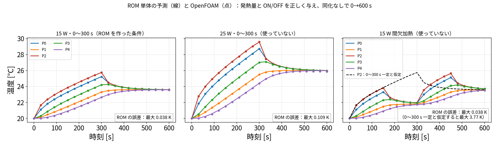
図 8 OpenFOAM（太い薄い線）と ROM（細い破線）の代表 5 点の温度（上）と、その差（下）。下の帯は温度計のノイズ ±0.30 K。左から、ROM を作った条件、25 W、間欠加熱。右の点線は参考で、ON/OFF を与えず「0〜300 秒ずっと発熱」と決め打ちした ROM。
| 条件 | 最大の温度上昇 | ROM の誤差（5 点の最大） | 温度上昇に対する比 |
|---|---|---|---|
| 15 W（作った条件） | 5.8 K | 0.038 K | 0.7 % |
| 25 W | 9.6 K | 0.109 K | 1.1 % |
| 間欠加熱（ON/OFF を与える） | 5.7 K | 0.038 K | 0.7 % |
同じ結果に、ヒータの発熱（灰色の面、右の目盛り）を重ねて、字を大きくしたのが図 8b です（発表用）。ヒータが入っている間に温度が上がり、切れると下がる様子と、ROM がそれに付いていく様子が 1 枚で見えます。
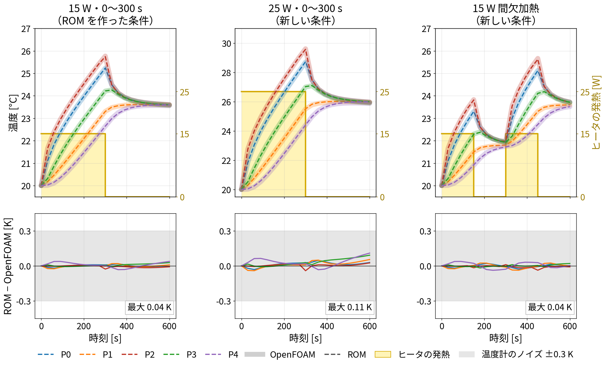
図 8b 図 8 の上段にヒータの発熱を重ねた版。灰色の面がヒータの発熱（右の目盛り、W）。下段は ROM − OpenFOAM、帯は温度計のノイズ ±0.3 K。図 8 の右の点線（ON/OFF を与えない ROM）は載せていない。
上の比較は代表 5 点の温度だけです。そこで、ROM の 5 点の温度から gappy-POD で全 20,696 セルの温度を戻し（\(\mathbf T = \bar{\mathbf T} + \Phi\,\Phi_P^{-1}(\mathbf T_P - \bar{\mathbf T}_P)\)、§7-4 と同じ）、代表 5 点以外の 20,691 セルで OpenFOAM と比べました。データ同化はしていません。
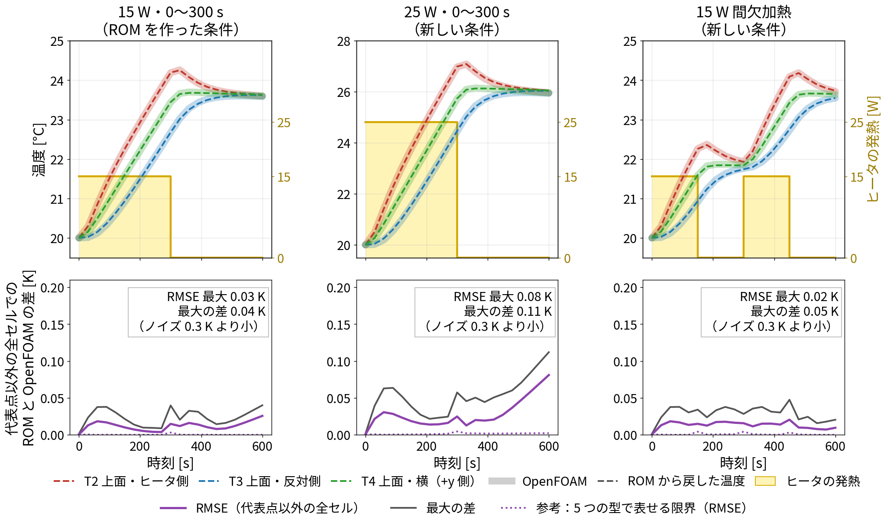
図 8c 上：代表点以外の 3 か所の温度。T2（上面・ヒータ側、(26.6, −1.6, 98.8) mm）、T4（上面・横の +y 側、(1.6, 26.6, 98.8) mm）、T3（上面・反対側、(−26.6, −1.6, 98.8) mm）で、上面をヒータ側から 0°・90°・180° 回った 3 か所（場所は図 8d）。T2・T3 は §11 と同じセル、T4 は §11 の T4（反対側・中段）とは別の場所。太い薄い線が OpenFOAM、破線が ROM から戻した温度、黄色の面がヒータの発熱（右の目盛り、W）。ヒータから離れるほど（T2 → T4 → T3）温度の上がり方が遅い。下：代表点以外の全セルでの差（紫＝RMSE、灰＝最大の差、紫の点線＝OpenFOAM の温度を 5 つの型で一番よく表したときの RMSE）。
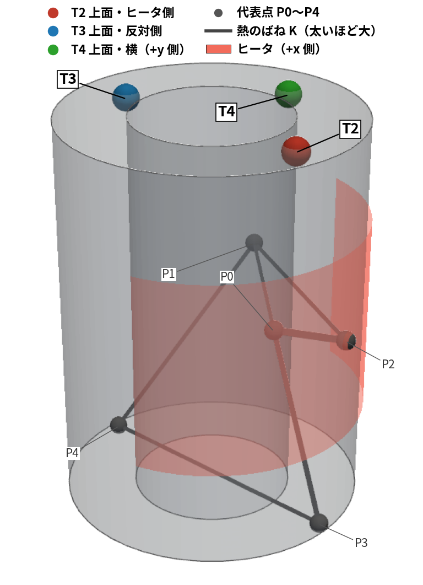
図 8d 図 8c で代表点以外の温度を比べた 3 か所（T2 赤・T3 青・T4 緑、図 8c の線と同じ色）と、代表点 P0〜P4（灰）、代表点どうしをつなぐ熱回路の熱コンダクタンス K（灰の線、太いほど K が大きい。§7-4 の図 7 と同じ 6 本）、ヒータ（薄い赤、外周の +x 側、高さ 25〜75 mm）。斜めから見た図。3 か所とも上面で、ヒータからの向きだけが違う（T2 0°、T4 90°、T3 180°）。
| 条件 | RMSE の最大 | 最大の差 | 5 つの型で表せる限界（RMSE） |
|---|---|---|---|
| 15 W（作った条件） | 0.03 K | 0.04 K | 0.003 K |
| 25 W | 0.08 K | 0.11 K | 0.005 K |
| 間欠加熱 | 0.02 K | 0.05 K | 0.004 K |
ROM の温度は、POD の型（固定）の足し合わせ \(\mathbf u(t) \approx \bar{\mathbf u} + \sum_k a_k(t)\,\boldsymbol\varphi_k\) で表しています。条件が変わって動くのは混ぜ具合 \(a_k(t)\) だけで、型 \(\boldsymbol\varphi_k\) は変わりません。
新しい条件の OpenFOAM の温度を、5 つの型で最も近く表したときに残る誤差（全 20,696 セル）は次のとおりで、どれも型で表せました。
| 条件 | 型で表したときに残る誤差 |
|---|---|
| 15 W（作った条件） | 0.0007 K |
| 25 W | 0.0029 K |
| 間欠加熱 | 0.0019 K |
| 変わるもの | 作り直しが必要な理由 |
|---|---|
| 熱源の位置・数 | 熱い場所が変わり、温度分布の型が変わる |
| 形状・メッシュ | 型がセルに結び付いている |
| 材料（熱伝導率・熱容量） | ROM の係数が変わる |
| 拘束（固定のしかた） | 温度から変位への換算が変わる |
作り直すには、OpenFOAM の計算（1 本あたり約 1〜3 時間）からやり直します。手順はスクリプトにしてあります。
確かめていない条件：25 W より大きく外れた発熱量、ランプ状の発熱や 30 秒より短い ON/OFF、600 秒より長い運転（OpenFOAM との比較）、周囲温度の変化、実機。
| プログラム | すること |
|---|---|
run/limit_realsolver_truth.py |
25 W・間欠加熱の OpenFOAM の結果を読み、ROM と比べる。5 つの型で表したときに残る誤差も計算 |
run/rom_alone_intermittent.py |
間欠加熱で、ON/OFF を与えた ROM と与えない ROM を比べる（図 8 の右の列） |
dacore/rom_general.py の
heater_power_W |
ヒータの発熱の時間変化。間欠加熱ではこの関数を差し替える |
run/make_rom_applicability_fig.py --heater |
図 8b（ヒータの発熱を重ねた版）。--heater なしで図
8 |
run/rom_field_vs_openfoam.py |
図 8c。ROM → gappy-POD で全セルの温度を戻し、代表点以外で OpenFOAM
と比べる（results/rom_field_vs_openfoam.json） |
run/make_rom_field_points_fig.py |
図 8d。図 8c で温度を比べた場所・代表点・ヒータの図 |
最初の ROM では、ヒータの時間変化が「0〜300
秒だけ発熱」と書き込まれていました（dacore/rom_general.py）。間欠加熱ではここを実際の
ON/OFF に差し替えます。
HEATER_ON_S = 300.0
def heater_power_W(t, q_scale=1.0):
return np.where(np.asarray(t) < HEATER_ON_S, q_scale * HEATER_RATED_W, 0.0)ここ（9-1〜9-4）を、発表の 8 ページ目に載せます。9-5 は使ったプログラム、9-6 は話す内容です。6・7 ページ目の ROM を予報のモデルにして、EnKF で 30 秒ごとに観測を取り込みます（詳しくは blog_006 §3）。
\[ \mathbf z = \big(T_0,\ T_1,\ T_2,\ T_3,\ T_4,\ q,\ h\big)^{\mathsf T} \]
最初は、7 つの数を少しずつ変えた 60 通り（メンバー）を用意します。
| 成分 | 最初のばらつかせ方 |
|---|---|
| 温度 | 気温 20 ℃ から −3〜+12 K（一様乱数） |
| \(q\) | 0.3〜1.8（発熱量 4.5〜27 W） |
| \(h\) | 平均 0.02、標準偏差 0.01 W/K |
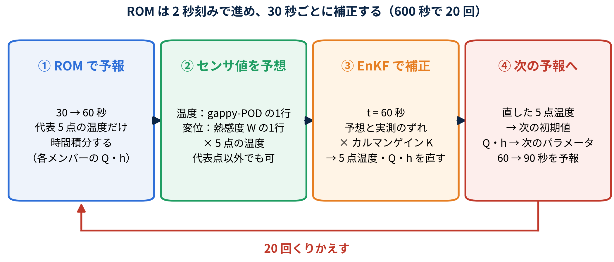
図 9 データ同化の 1 サイクル。ROM は 2 秒刻みで進め、30 秒ごとに補正する（600 秒で 20 回）。
| ステップ | すること |
|---|---|
| ① ROM で予報 | 60 メンバーそれぞれを、ROM で 30 秒進める（2 秒刻み × 15 回）。計算するのは代表 5 点の温度だけ |
| ② センサの値を予想 | 各メンバーについて「このメンバーの状態が正しいなら、センサは何を示すはずか」を計算する |
| ③ EnKF で補正 | 予想と実測のずれに、重み（カルマンゲイン）を掛けて、5
点の温度・\(q\)・\(h\) を直す |
| ④ 次の予報へ | 直した 5 点の温度を次の初期値、直した \(q\)・\(h\) を次の発熱・放熱の条件にして、次の 30
秒を予報する |
予報している 30 秒の間はセンサを使わず、補正する瞬間は時間を進めません。この 2 つを交互にくりかえします。
下の図は、上の 4 ステップを実際に回したときの、60 メンバーの動きです（15 W の正解、温度計 P2・P0、ノイズ 0.3 K、§9 と同じ設定）。描いているのは P2 の温度だけです。

図 9b 左：各時刻での散らばり。点線と白丸が予報（ROM で 30
秒進めた 60
メンバー）、緑のひし形が観測、実線と赤丸が補正後。青い破線は、補正後の各メンバーを
ROM で次の時刻まで進める「1 期先予測」（6 本に 1
本だけ描いた）。右：メンバーの時刻歴（灰、30 本）と平均（赤）。30
秒ごとに、観測に寄せられて縦に跳ぶ。作図：presentation/make_enkf_image_figure.py。
| 時刻 | 予報の平均・幅 | 観測 | 補正後の平均・幅 | 正解 |
|---|---|---|---|---|
| 30 秒 | 26.35 °C ± 2.14 K | 21.39 °C | 21.43 °C ± 0.30 K | 21.66 °C |
| 60 秒 | 22.19 °C ± 0.88 K | 22.74 °C | 22.83 °C ± 0.28 K | 22.40 °C |
| 90 秒 | 23.75 °C ± 0.47 K | 22.63 °C | 22.86 °C ± 0.24 K | 22.95 °C |
・\(h\) が絞られるにつれて小さくなります（2.1 →
0.9 → 0.5 K）。センサは代表 5 点に置かなくてかまいません。どのセンサの値も、5 点の温度に重みを掛けて足した形で予想できるからです。
\[ y_c = \mathbf h_c^{\mathsf T}\,\delta\mathbf T_P \]
重みはデータ同化を始める前に 1 回計算しておくので、データ同化の中で OpenFOAM も FrontISTR も回しません。
メンバー \(m\) ごとに、次の 1 式で直します。
\[ \mathbf z_a^{(m)} = \mathbf z_f^{(m)} + K\left(\mathbf y_{\mathrm{obs}} + \boldsymbol\varepsilon^{(m)} - \mathbf y_f^{(m)}\right),\qquad K = P_{zy}\left(P_{yy} + R\right)^{-1} \]
：補正前（予報）、\(\mathbf z_a\)：補正後：センサの値の予想、\(\mathbf
y_{\mathrm{obs}}\)：実測、\(\boldsymbol\varepsilon^{(m)}\)：メンバーごとに足す観測の乱数：「状態」と「センサの予想」が 60 メンバーの中で一緒に動く度合い（共分散）、\(P_{yy}\)：センサの予想のばらつき、\(R\)：センサの誤差\(P_{zy}\) の中には、\(q\) とセンサの予想の関係も入っています。そのため、温度や変位のずれから発熱量も直せます。
| 設定 | 値 |
|---|---|
| メンバー数 | 60 |
| 補正の間隔・回数 | 30 秒ごと、600 秒で 20 回 |
| センサの誤差（乱数の大きさ） | 温度 0.30 K、変位 0.30 µm |
| ばらつきを保つための膨張 | 1.02 倍 |
| 乱数を変えた計算 | 5 回（seed 20260913〜17）の平均で評価 |
| プログラム | すること |
|---|---|
dacore/rom_general.py |
① ROM で 60 メンバーを 30 秒進める |
run/holdout_AO_realsolver.py |
② センサの値の予想（5 点の温度の一次式）、③
dacore/enkf.py で補正、④ 次へ、を 20 回 |
run/build_full_disp_operator.py |
変位計の重み（POD の型ごとの FrontISTR の変位）を前もって計算する |
1 サイクル（run/holdout_AO_realsolver.py、抜粋）：
for ci, tb in enumerate(cyc, 1): # 30 秒ごとに 20 回
Z[:, :NPT] = integ_on(Z[:, :NPT], C, Km, Z[:, IH], Z[:, IQ], heat, on, tp, tb) # ① ROM で予報
yv = list(T5[ci][TN]); Yf = Z[:, TN] # ② 温度計の予想 = その代表点の温度
for (i, c), w, b0 in zip(obs, ws, u0): # 変位計の予想 = 5 点の温度の一次式
yv.append(utrue[ci, i, c])
Yf = np.column_stack([Yf, b0 + (Z[:, :NPT] - mp) @ w])
y = np.array(yv) + ro.normal(0, np.sqrt(np.diag(Rd))) # 実測（正解 + 誤差）
Z = enkf_update(Z, y, None, Rd, rng, inflation=INFL, Yf=Yf) # ③ 補正（5 点の温度・q・h）ここ（10-1〜10-4）を、発表の 9 ページ目に載せます。10-5 は使ったプログラム、10-6 は話す内容です。8 ページ目の流れで、一度も測らない場所の反りを当てられるかを試しました（詳しくは blog_008 §6、数値は 2026-10-12 に IDW で計算し直したもの）。
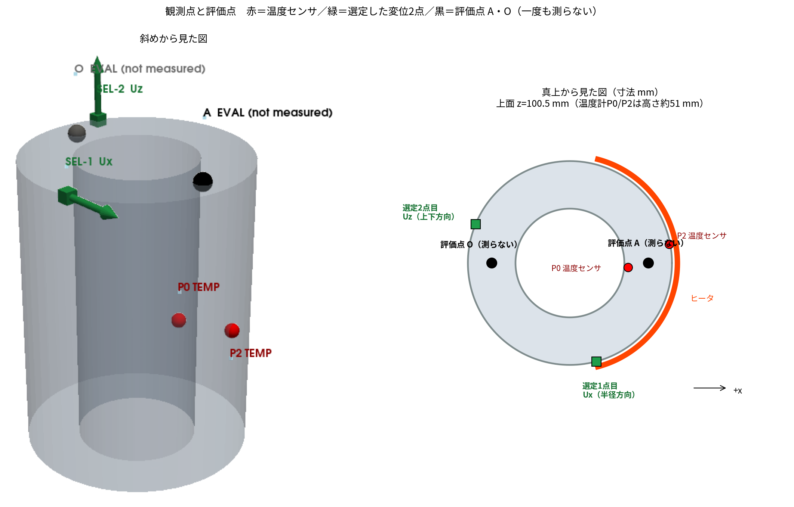
図 10 点の場所。赤＝温度計（P2・P0）、緑＝選んだ変位計 2 点（S1・S2）、黒＝評価点 A・O（一度も測らない）。左は斜めから、右は真上から見た図。
| 種類 | 点 | 何のための点か |
|---|---|---|
| 代表点 | P0〜P4（Q-DEIM で選んだ 5 セル） | ROM が温度を計算する点。センサを置く点ではない |
| 観測点 | 温度計 P2・P0（ヒータ側の中段）／変位計 S1・S2（上面、S1 は横方向 \(U_x\)、S2 は上下方向 \(U_z\)） | 実際に測って、データ同化に使う点 |
| 未観測点（評価点） | 上面のヒータ側 A と反対側 O | 一度も測らない。推定した反り \(U_z(A) - U_z(O)\) を、正解と比べるためだけに使う |
正解は OpenFOAM＋FrontISTR で計算した温度と変位です（ROM とは別の計算）。3 つの加熱の条件で試しました。
| 条件 | ヒータ | ROM を作るときに見たか |
|---|---|---|
| 15 W | 15 W を 0〜300 秒 | 見た |
| 25 W | 25 W を 0〜300 秒 | 見ていない |
| 間欠加熱 | 15 W を 0〜150 秒と 300〜450 秒 | 見ていない（ON/OFF の時刻は与える） |
温度計はどれも P2・P0 の 2 本で、変位計の置き方を変えて比べました。
| 観測の組み合わせ | 変位計の置き方 |
|---|---|
| 温度 2 点のみ | なし |
| ＋A・O 自身を測る（参考） | 評価点 A・O に変位計を置く（測れない場所を測った場合） |
| ＋中段の 2 点（B・C） | 中段（高さ 75 mm）の 2 点 |
| ＋底面近くの 2 点（悪い例） | 底面近く（高さ 5 mm）の 2 点 |
| ＋選んだ 2 点（本研究） | 上面の S1・S2（選び方は次のページ） |
EnKF の設定は 8 ページ目のとおりです（60 メンバー、30 秒ごと、5 回の乱数の平均）。誤差は、加熱している 30〜300 秒の平均です。
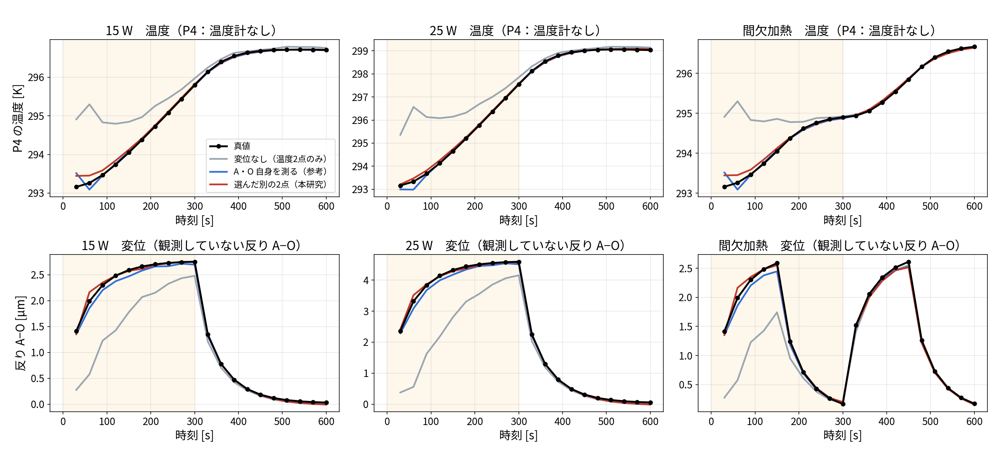
図 11 上：温度計のない代表点 P4 の温度。下：一度も測らない反り A−O。黒が正解（OpenFOAM＋FrontISTR）、灰が温度 2 点だけ、青が A・O 自身を測った場合（参考）、赤が選んだ 2 点（本研究）。
一度も測らない反り A−O の誤差 [µm]
| 観測の組み合わせ | 15 W | 25 W | 間欠加熱 |
|---|---|---|---|
| 温度 2 点のみ | 0.775 | 1.417 | 0.635 |
| ＋A・O 自身を測る（参考） | 0.137 | 0.154 | 0.100 |
| ＋中段の 2 点（B・C） | 0.186 | 0.193 | 0.142 |
| ＋底面近くの 2 点（悪い例） | 0.587 | 1.100 | 0.487 |
| ＋選んだ 2 点（本研究） | 0.076 | 0.083 | 0.072 |
（results/holdout_AO_realsolver.json）
| プログラム | すること |
|---|---|
run/holdout_AO_realsolver.py |
3 条件 × 5 通りの観測 × 5 回の乱数でデータ同化し、一度も測らない反り
A−O の誤差を計算（results/holdout_AO_realsolver.json） |
dacore/temperature_mapping.py |
正解の OpenFOAM の温度を、FrontISTR の節点へ IDW で渡す（近い 8 セルを距離の逆数で重み付け） |
反りの推定（同じスクリプト、抜粋）：直した 5 点の温度の平均から、A・O の変位を一次式で計算します。
m = Z[:, :NPT].mean(0); dm = m - mp # 直した 5 点の温度（平均）の、基準からの差
est = (aA + wA @ dm) - (aO + wO @ dm) # 反り = U_z(A) − U_z(O)（どちらも 5 点の温度の一次式）
eAO.append(abs(est - aot[ci])) # 正解（OpenFOAM＋FrontISTR）との差ここ（11-1〜11-2）を、発表の 10 ページ目に載せます。11-3 は使ったプログラム、11-4 は話す内容です。9 ページ目は反り（変位）でした。このページでは、測っていない場所の温度も合うかを見ます。
データ同化で直したのは代表 5 点の温度だけです。そこから gappy-POD で全 20,696 セルの温度を戻し、観測していない場所の温度を正解（OpenFOAM）と比べました。
\[ \mathbf T_{\text{全体}} = \bar{\mathbf u} + \Phi\,\Phi_P^{+}\,\big(\mathbf T_P - \bar{\mathbf u}_P\big) \]
（\(\Phi\)：POD の型、\(\Phi_P\)：その代表 5 点の行、\(^{+}\)：擬似逆行列、\(\mathbf T_P\)：直した代表 5 点の温度。5
回の乱数の平均）
比べた場所は、温度計のある P2・P0 とは別の 4 か所（T1〜T4）です。どれも観測には使いません。
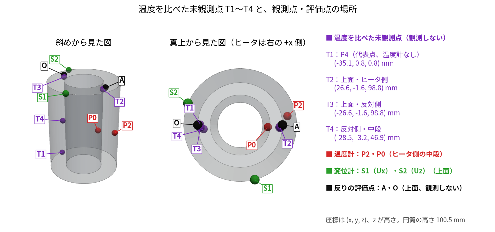
図 12a 温度を比べた未観測点 T1〜T4（紫）と、温度計 P2・P0（赤）、変位計 S1・S2（緑）、反りの評価点 A・O（黒）。左は斜めから、右は真上から見た図。ヒータは +x 側（右）。
| 点 | 場所 | 座標 (x, y, z) [mm] |
|---|---|---|
| T1 | 代表点 P4。反対側の底面近く（温度計なし） | (−35.1, 0.8, 0.8) |
| T2 | 上面・ヒータ側（評価点 A の近く） | (26.6, −1.6, 98.8) |
| T3 | 上面・反対側（評価点 O の近く） | (−26.6, −1.6, 98.8) |
| T4 | 反対側・中段 | (−28.5, −3.2, 46.9) |
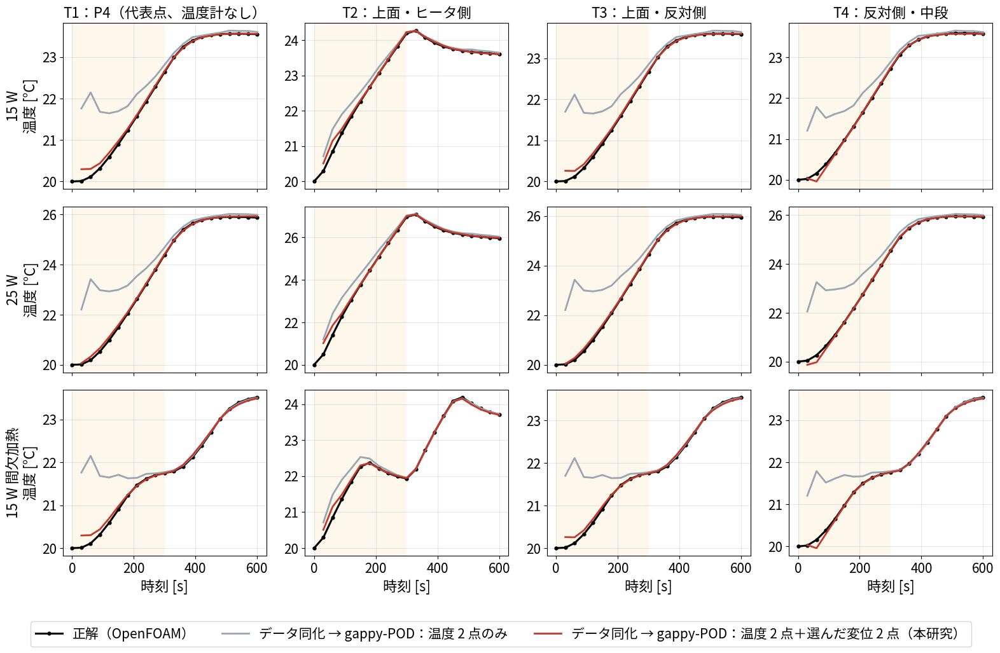
図 12 未観測点 T1〜T4 の温度（行：加熱の条件、列：場所）。黒が正解（OpenFOAM）、灰が温度 2 点だけ、赤が温度 2 点＋選んだ変位 2 点（本研究）。どちらもデータ同化で直した代表 5 点から gappy-POD で戻した温度。T1（P4）は代表点だが温度計はない。T2〜T4 は代表点でもない。
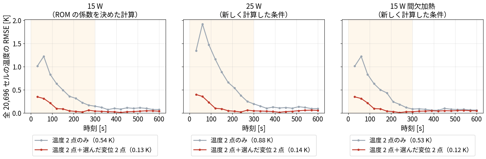
図 13 全 20,696 セルの温度の RMSE の時間変化。かっこ内は加熱期 30〜300 秒の平均。
観測していない場所の温度の誤差（加熱期 30〜300 秒の平均）[K]
| 条件 | 観測 | 全セル（RMSE） | T1（P4） | T2 上面・ヒータ側 | T3 上面・反対側 | T4 反対側・中段 |
|---|---|---|---|---|---|---|
| 15 W | 温度 2 点のみ | 0.54 | 0.89 | 0.28 | 0.88 | 0.73 |
| 15 W | ＋選んだ変位 2 点 | 0.13 | 0.09 | 0.08 | 0.08 | 0.04 |
| 25 W | 温度 2 点のみ | 0.88 | 1.47 | 0.49 | 1.47 | 1.37 |
| 25 W | ＋選んだ変位 2 点 | 0.14 | 0.07 | 0.13 | 0.05 | 0.07 |
| 間欠加熱 | 温度 2 点のみ | 0.53 | 0.78 | 0.25 | 0.77 | 0.64 |
| 間欠加熱 | ＋選んだ変位 2 点 | 0.12 | 0.08 | 0.08 | 0.07 | 0.04 |
（run/holdout_unobserved_cells.py →
results/holdout_unobserved_cells.json。全セル以外は、その場所の温度の差の絶対値の平均）
| プログラム | すること |
|---|---|
run/make_unobserved_points_fig.py |
未観測点 T1〜T4 と観測点・評価点の場所の図（図 12a） |
run/holdout_unobserved_cells.py |
9 ページ目と同じデータ同化（温度 2 点のみ／温度 2 点＋選んだ変位 2 点）を 3 条件 × 5 回の乱数で回し、直した代表 5 点から gappy-POD で全セルの温度を戻して、OpenFOAM と比べる |
全体の温度を戻す
gappy-POD（run/holdout_unobserved_cells.py）：
UPp = np.linalg.pinv(U[pod, :]) # 代表 5 点の行の擬似逆行列（5 × 5）
def recon(T5): # 直した代表 5 点の温度 → 全 20,696 セル
return mean[None, :] + ((T5 - mp) @ UPp.T) @ U.T # T = 平均 + Φ Φ_P⁺ (T_P − 平均_P)
full = recon(T5m) # 各時刻の全セルの温度
rmse = np.sqrt(((full - Tf) ** 2).mean(1)) # 正解（OpenFOAM）との差ここ（12-1〜12-4）を、発表の 11 ページ目に載せます。9 ページ目で「置き場所が悪いと効かない」ことが分かりました。どこに置けばよいかを、Fisher 情報行列で選びます。式の意味と手計算は blog_012 で丁寧に解説しています。
センサ \(c\) の値が未知の数 \(\boldsymbol\theta\)（代表 5 点の温度）でどれだけ変わるか（感度）を \(\mathbf h_c\)、ノイズの分散を \(r_c\) とすると、
\[ F = \sum_{c}\sum_{k} \frac{\mathbf h_{c,k}\,\mathbf h_{c,k}^{\mathsf T}}{r_c}, \qquad P = \left(B^{-1} + F\right)^{-1} \]
知りたいのは反り \(d = \mathbf w^{\mathsf T}\boldsymbol\theta\) なので、反りの不確かさ \(\mathbf w^{\mathsf T}P\,\mathbf w\) を一番減らすセンサを、1 本ずつ選びます。センサ \(c\) を 1 本足したときの減りは
\[ \Delta_c = \frac{\big(\mathbf w^{\mathsf T} P\, \mathbf h_c\big)^2}{\mathbf h_c^{\mathsf T} P\, \mathbf h_c + r_c} \]
| 基準 | 小さくするもの |
|---|---|
| A 最適 | \(\operatorname{tr} P\)（5 点の温度の不確かさの合計） |
| D 最適 | \(\det P\)（不確かさの体積） |
| 目的指向（本研究） | \(\mathbf w^{\mathsf T} P\, \mathbf w\)（知りたい反りの不確かさ） |
同じ候補（変位 14,754 通り）から、選び方だけを変えて 2 点を選び、9
ページ目と同じデータ同化で比べました（真値は
OpenFOAM＋FrontISTR、温度計は
P2・P0、results/placement_method_comparison.json）。
| 選び方 | 予測した反りの不確かさ [µm] | 実際の反りの誤差 15 W [µm] | 25 W | 間欠加熱 |
|---|---|---|---|---|
| 変位なし（温度 2 点のみ） | 1.19 | 0.775 | 1.417 | 0.635 |
| よく動く点に置く | 1.01 | 0.569 | 1.079 | 0.453 |
| Q-DEIM | 0.32 | 0.134 | 0.165 | 0.105 |
| D 最適 | 0.35 | 0.108 | 0.109 | 0.095 |
| A 最適 | 0.27 | 0.089 | 0.097 | 0.078 |
| 目的指向（本研究） | 0.26 | 0.076 | 0.083 | 0.072 |
| プログラム | すること |
|---|---|
run/select_nonrep_temp_disp.py |
add_row（1 本測った後の不確かさ）と
score（残る反りの不確かさ \(J_c\)） |
run/make_sensor_score_map.py |
変位の候補 14,754 通りを採点し、1 本ずつ 2
本選ぶ（results/sensor_score_idw.json） |
run/placement_method_comparison.py |
A 最適・D 最適・Q-DEIM
などで選び、同じデータ同化で比べる（results/placement_method_comparison.json） |
1
本測った後の不確かさと採点（run/select_nonrep_temp_disp.py）：
def add_row(P, h, r): # センサ（感度 h、誤差 r）を 1 本足した後の P
Ph = P @ h
return P - np.outer(Ph, Ph) / (h @ Ph + r) # = (P⁻¹ + h hᵀ / r)⁻¹
def score(Ps, w, Hc, r): # 候補ごとに、残る反りの標準偏差を時刻平均
s = np.zeros(len(Hc))
for P in Ps: # 30〜300 秒の 10 時刻
HP = Hc @ P
s += np.sqrt(np.maximum(w @ P @ w - (HP @ w)**2 / (np.einsum("ij,ij->i", HP, Hc) + r), 0))
return s / len(Ps) # J_c（小さいほどよい）A 最適・D
最適（run/placement_method_comparison.py）：同じ \(P\)
から、トレースと行列式を計算します。
def post(B, ws): # 温度 2 点 + 変位を測った後の P
H = np.vstack([Ht] + [w[None, :] for w in ws])
K = B @ H.T @ np.linalg.inv(H @ B @ H.T + R)
return B - K @ H @ B
P = post(B, ws)
sigma_AO = np.sqrt(w_AO @ P @ w_AO) # 目的指向（反りの不確かさ）
trace = np.trace(P) # A 最適
logdet = np.linalg.slogdet(P)[1] # D 最適先行研究の調査（docs/26）をもとに、今回の研究で言えることと、これから優位性を出せる所をまとめます。発表では最後の 1 枚（今後の展開）にします。
| 言えること | 根拠（この記事の結果） | 近い先行研究との違い |
|---|---|---|
| 温度と変位を同じデータ同化の観測に入れ、測らない反り（工具とワークのずれに当たる量）を直せる | 変位 2 点を足すと、測っていない場所の温度も全セルで 0.12〜0.14 K（温度だけでは 0.53〜0.88 K）。§10・§11 | 工作機械の熱変位の逐次推定（論文 A：Lang ら 2024、論文 B：Lang ら 2026）は温度だけを観測に使い、変位は検証用 |
| 知りたい反りに合わせて、変位計の位置と向きまで選べる | 目的指向で選んだ配置が 3 条件とも一番よかった（0.076 µm。A 最適 0.089、D 最適 0.108 µm）。§12 | 目的を指定した配置（Herzog ら 2018）は温度センサが対象。それを変位計に広げた |
| すべて公開ソルバ（OpenFOAM＋FrontISTR）で、手順を追える | プログラムを各章に載せた | Siemens Smart Virtual Sensing は同じ枠組み（縮約モデル＋カルマンフィルタ＋配置設計）を構造で製品化している |
一方で、次のものはすでにあり、本研究の新しさではありません。
論文 A・B の著者自身が「今後の課題」に挙げているのは、熱入力（発熱）の実時間推定と、熱伝達率などの境界条件を運転中に動かすことです。ここはまだ空いており、工作機械を使う側（NC の回転数・電力が手に入り、実機で運転を変えられる）の立場が直接効きます。
| 方向 | すること | 優位性が出る理由 | 今ある資産 |
|---|---|---|---|
| A：運転・冷却の変化に追従する | 主軸・送りの発熱やクーラントの流量が変わる運転で、発熱と冷却（熱伝達率）を同化で追い、熱変位を推定する | 論文 A は熱入力を 0、論文 B は既知として与え、境界条件は運転中に直さない | 106 の ROM＋EnKF（発熱 \(q\) と放熱 \(h\) を状態に入れている）、25 W・間欠加熱の真値 |
| B：流体と固体の熱連成（CHT）から ROM を作る | 流れ（流量）が変わっても使える熱の ROM を、CHT の計算から作る | 論文 B は CFD を熱伝達率の範囲を決めるためだけに使う。Siemens の熱の ROM は熱伝導だけ | OpenFOAM の CHT。108 のクーラントタンク（ポンプを止めると流れが変わり、ROM が合わなくなることを確認済み） |
| 理論：何を測れば何が分かるか | ① 発熱 \(Q\) と放熱 \(h\) を見分けられる条件（観測期間・運転のしかた）、② 変位の観測が温度場について持つ情報 | ①「600 秒では \(h\) が決まらない」、②「変位 2 点で測っていない場所の温度まで直る」の 2 つの結果に、なぜそうなるかを式で示せる | Fisher 情報の式、変位の換算行列 \(W\)、POD の型 |
| 実機での検証（必須） | 社内の機械で、温度・主軸の伸び・クーラントの流量と温度・NC の回転数と電力を記録し、推定に使わないセンサで確かめる | 比べる相手はすべて実機。実機がないと評価されにくい | 社内の機械で測れる見込み |